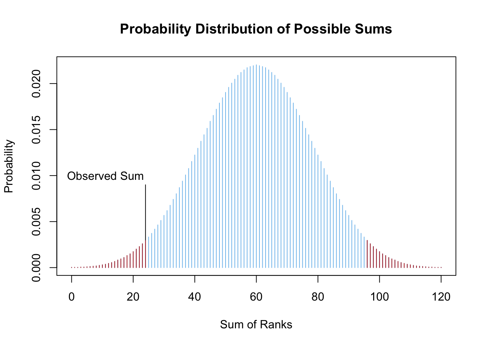
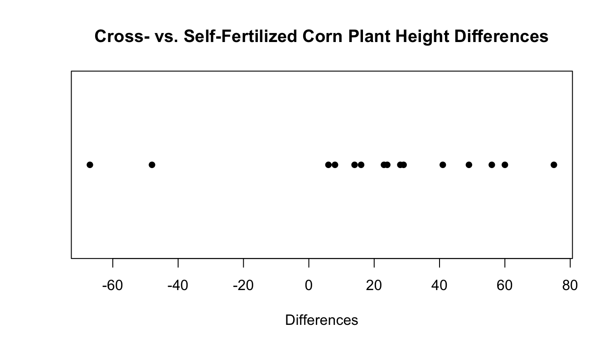
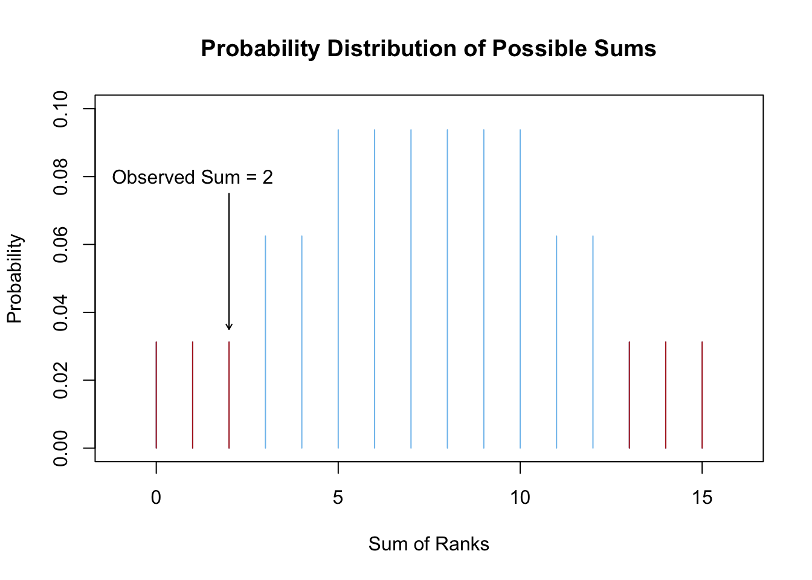
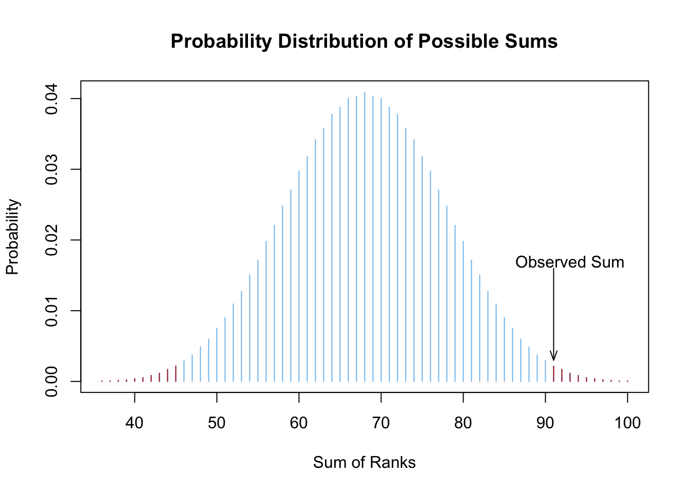

Wilcoxon Tests
Wilcoxon tests allow for the testing of hypotheses about the value of the the median without assuming the test statistic follows any parametric distribution. They are often seen as nonparametric alternatives to the various t tests. However, they can also be used on ordinal data (data that is not quite quantitative, but is ordered) unlike t tests which require quantitative data.
Wilcoxon Signed-Rank Test

For testing hypotheses about the value of the median of (1) one sample of quantitative data or (2) one set of differences from paired data.
Overview
The nonparametric equivalent of the paired-samples t test as well as the one-sample t test.
Best for smaller sample sizes where the distribution of the data is not normal. The t test is more appropriate when the data is normal or when the sample size is large.
While the test will work in most scenarios it suffers slightly when ties (repeated values) are present in the data. If many ties are present in the data, the test is not appropriate. If only a few ties are present, the test is still appropriate.
Hypotheses
Originally created to test hypotheses about the value of the median, but works as well for the mean when the distribution of the data is symmetrical.
One Sample of Data
\(H_0: \text{Median} = \text{(Some Number)}\)
\(H_a: \text{Median} \ \left\{\underset{<}{\stackrel{>}{\neq}}\right\} \ \text{(Some Number)}\)
Paired Samples of Data
\(H_0: \text{median of differences} = 0\)
\(H_a: \text{median of differences} \ \left\{\underset{<}{\stackrel{>}{\neq}}\right\} \ 0\)
Examples: sleep, CornHeights
R Instructions
Console Help Command:
?wilcox.test()
Paired Data
wilcox.test(Y1, Y2, mu = YourNull, alternative = YourAlternative, paired = TRUE, conf.level = 0.95)
Y1must be a “numeric” vector. One set of measurements from the pair.Y2also a “numeric” vector. Other set of measurements from the pair.YourNullis the numeric value from your null hypothesis for the median of differences from the paired data. Usually zero.YourAlternativeis one of the three options:"two.sided","greater","less"and should correspond to your alternative hypothesis.- The value for
conf.level = 0.95can be changed to any desired confidence level, like 0.90 or 0.99. It should correspond to \(1-\alpha\).
Example Code
Hover your mouse over the example codes to learn more.
wilcox.test( ‘wilcox.test’ is a function for non-parametric one
and two sample tests.
sleep$extra[sleep$group==1], The hours of
extra sleep that the group had with drug 2. sleep$extra[sleep$group==2], The hours of extra sleep that the same group had
with drug 1. mu = 0, The numeric value from the null hypothesis for the
median of differences from the paired data is 0 meaning the null
hypothesis is \(\text{median of differences} =
0\). paired=TRUE, This command forces a “paired” samples test to be
performed. alternative =
“two.sided”, The alternative hypothesis is
“two.sided” meaning the alternative hypothesis is \(\text{median of differences}
\neq0\). conf.level = 0.95)
This test has a 0.95 confidence level which
corresponds to 1 - \(\alpha\).
Press Enter to run the code if you have typed
it in yourself. You can also click here to view the output.
… Click to View Output.
One Sample
wilcox.test(object, mu = YourNull, alternative = YourAlternative, conf.level = 0.95)
objectmust be a “numeric” vector.YourNullis the numeric value from your null hypothesis for the median (even though it says “mu”).YourAlternativeis one of the three options:"two.sided","greater","less"and should correspond to your alternative hypothesis.- The value for
conf.level = 0.95can be changed to any desired confidence level, like 0.90 or 0.99. It should correspond to \(1-\alpha\).
Example Code
Hover your mouse over the example codes to learn more.
wilcox.test( ‘wilcox.test’ is a function for non-parametric one
and two sample tests. mtcars ‘mtcars’ is a dataset. Type ‘View(mtcars)’ in R to
view the dataset. $ The $ allows us to access any variable from the
mtcars dataset. mpg, ‘mpg’ is a quantitative variable (numeric vector)
from the mtcars dataset. mu = 20,
The numeric value from the null hypothesis
is 20 meaning \(\mu = 20\).
alternative = “two.sided”, The alternative is “two.sided” meaning the
alternative hypothesis is \(\mu\neq20\). conf.level = 0.95) This
test has a 0.95 confidence level which corresponds to 1−α.
Press Enter to run the code if you have typed
it in yourself. You can also click here to view the output.
… Click to View Output.
Explanation
In many cases it is of interest to perform a hypothesis test about the location of the center of a distribution of data. The Wilcoxon Signed Rank Test allows a nonparametric approach to doing this.
The Wilcoxon Signed-Rank Test covers two important scenarios.
- One sample of data from a population. (Not very common.)
- The differences obtained from paired data. (Very common.)
The Wilcoxon methods are most easily explained through examples, beginning with the paired data for which the method was originally created. Scroll down for the One Sample Example if that is what you are really interested in. However, it is still recommended that you read the paired data example first.
Paired Data Example
Note: the data for this example comes from the original 1945 paper Individual Comparison by Ranking Methods by Frank Wilcoxon.
Background
Height differences “between cross- and self- fertilized corn plants of the same pair” were collected. The experiment hypothesized that the center of the distribution of the height differences would be zero, with the alternative being that the center was not zero. The result of the data collection was 15 height differences:
Differences: 14, 56, 60, 16, 6, 8, -48, 49, 24, 28, 29, 41, -67, 23, 75
Step 1
The first step of the Wilcoxon Signed Rank Test is to order the differences from smallest magnitude to largest magnitude. Negative signs are essentially ignored at this point and only magnitudes of the numbers matter.
Sorted Differences: 6, 8, 14, 16, 23, 24, 28, 29, 41, -48, 49, 56, 60, -67, 75
Step 2
The next step is to rank the ordered values. Negative signs are attached to the ranks corresponding to negative numbers.
| Differences: | 6 | 8 | 14 | 16 | 23 | 24 | 28 | 29 | 41 | -48 | 49 | 56 | 60 | -67 | 75 |
| Ranks: | 1 | 2 | 3 | 4 | 5 | 6 | 7 | 8 | 9 | -10 | 11 | 12 | 13 | -14 | 15 |
Note that the ranks will always be of the form \(1, 2, \ldots, n\). In this case, \(n=15\).
Step 3
The ranks are then put into two groups.
| Negative Ranks | Positive Ranks |
|---|---|
| -10, -14 | 1, 2, 3, 4, 5, 6, 7, 8, 9, 11, 12, 13, 15 |
Step 4
One of the groups is summed, usually the group with the fewest observations. Only the absolute values of the ranks are summed.
Sum of Negative Ranks: \(\left|-10\right| + \left|-14\right| = 24\)
The sum of the ranks becomes the test statistic of the Wilcoxon Test. The test statistic is sometimes called \(W\) or \(V\) or \(U\).
Step 5
The \(p\)-value of the test is then obtained by computing the probability of the test statistic being as extreme or more extreme than the one obtained. This is done by first computing the probability of all possible values the test statistic could have obtained using mathematical counting techniques. This is a very tedious process that only a mathematician would enjoy pursuing. However, the end result is fairly easily understood. If you are interested, read the details.

Computing the probabilities of all possible sums creates a distribution of the test statistic (shown in the plot above). Note that the test statistic is obtained in Step 4 (above) by taking the sum of the ranks. Once the distribution of the test statistic is established, the \(p\)-value of the test can be calculated as the combined probability of possible sums that are as extreme or more extreme than the one observed.
For this example, it turns out that the probability of getting a sum of (the absolute value of) negative ranks as extreme or more extreme than \(24\) is \(p=0.04126\) (the sum of the probabilities of the red bars in the plot above). Thus, at the \(\alpha=0.05\) level we would reject the null hypothesis that the center of the distribution of differences is zero. We conclude that the center of the distribution is greater than zero because the sum of negative ranks is much smaller than we expected under the zero center hypothesis (the null). Thus, there is sufficient evidence to conclude that the centers of the distributions of “cross- and self-fertilized corn plants” heights are not equal. One is greater than the other. Notice how the following dot plot shows that the differences are in favor of the cross-fertilized plants (the first group in the subtraction) being taller. This is true even though two self-fertilized plants were much taller than their cross-fertilized counterpart (the two negative differences).

Comment
If the distribution of differences is symmetric, then the hypotheses can be written as \[ H_0: \mu = 0 \] \[ H_a: \mu \neq 0 \]
If the distribution is skewed, then the hypotheses technically refer to the median instead of the mean and should be written as
\[ H_0: \text{median} = 0 \] \[ H_a: \text{median} \neq 0 \]
One Sample Example
The idea behind the one sample Wilcoxon Signed Rank test is nearly identical to the paired data. The only change is that the median must be subtracted from all observed values to obtain the differences. Note that the mean is equal to the median when data is symmetric.
Background
Suppose we are interested in testing to see if the median hourly wage of BYU-Idaho students during their off-track employment is equal to the minimum wage in Idaho, $7.25 an hour as of January 1st, 2015. Five randomly sampled hourly wages from BYU-Idaho Math 221B students provides the following data.
Wages: $6.00, $9.00, $8.10, $18.00, $10.45
The differences are then obtained by subtracting the hypothesized value for the median (or mean if the data is symmetric) from all observations.
Differences: -1.25, 1.75, 0.85, 10.75, 3.20
Note: from this point down, the wording of this example is identical to the paired data example (above) with the numbers changed to match \(n=5\). It is useful to continue reading to reinforce the idea of the Wilcoxon Signed Rank Test, but no new knowledge will be presented.
Step 1
The first step of the Wilcoxon Signed Rank Test is to order the differences from smallest magnitude to largest magnitude. Negative signs are essentially ignored at this point and only magnitudes of the numbers matter.
Sorted Differences: 0.85, -1.25, 1.75, 3.20, 10.75
Step 2
The next step is to rank the ordered values. Negative signs are attached to the ranks corresponding to negative numbers.
Ranks: 1, -2, 3, 4, 5
Note that the ranks will always be of the form \(1, 2, \ldots, n\). In this case, \(n=5\).
Step 3
The ranks are then put into two groups.
| Negative Ranks | Positive Ranks |
|---|---|
| -2 | 1, 3, 4, 5 |
Step 4
One of the groups is summed, usually the group with the fewest observations.
Sum of Negative Ranks: \(\left|-2\right| = 2\)
Step 5
The \(p\)-value of the test is then obtained by computing the probabilities of all possible sums using mathematical counting techniques. This is a very tedious process that only a mathematician would enjoy pursuing. However, the end result is fairly easily understood. If you are interested, read the details.
Details
When there are \(n=5\) ranks, the possible sums of ranks range from 0 to 15 and hit every integer in between, i.e., \(1, 2, 3, \ldots, 15\). (Note, if summing the negative ranks these sums would technically all be negative.)
To verify that \(15\) is the largest sum possible for \(n=5\) ranks, note that:
\(1+5 = 6\),
\(2 + 4 = 6\),
and finally \(3 = \frac{6}{2}\).
Thus, there are 2 sums of 6 and one sum of \(\frac{6}{2}\). This could be said in a mathematically equivalent way by stating there are \(\frac{4}{2}\) sums of 6 and one sum of \(\frac{6}{2}\). By multiplication this gives \[ \frac{4}{2}\cdot\frac{6}{1} + \frac{1}{1}\cdot\frac{6}{2} = \frac{4\cdot6 + 1\cdot6}{2} = \frac{5\cdot6}{2} = \frac{n(n+1)}{2} = 15 \]
The probability of each sum occurring is computed by counting all of the ways a certain sum can occur (combinations) and dividing by the total number of sums possible. (There are 32 total different groups of ranks possible when there are \(n=5\) ranks.)
For example, a sum of 1 can happen only one way, only the rank of 1 is in the group. A sum of 2 can also only happen 1 way. The sum of 3 however, can happen two ways: we could have the ranks of 1 and 2 in the group, or just the rank of 3 in the group. A similar counting technique is then implemented for each possible sum. After all the calculations are performed, the distribution of possible sums looks like what is shown in the following plot, where the red bars show those sums that are as extreme or more extreme than a sum of \(2\) (or its opposite of \(15-2=13\)).

Computing the probabilities of all possible sums creates a distribution of the test statistic (shown in the plot above). Note that the test statistic is obtained in Step 4 (above) by taking the sum of the ranks. Once the distribution of the test statistic is established, the \(p\)-value of the test can be calculated as the combined probability of possible sums that are as extreme or more extreme than the one observed.
For this example, it turns out that the probability of getting a sum of negative ranks as extreme or more extreme than \(-2\) is \(p=0.1875\) (the sum of the probabilities of the red bars in the plot above). Thus, at the \(\alpha=0.05\) level we would fail to reject the null hypothesis that the center of the distribution of differences is zero. We will continue to assume the null hypothesis was true, that the median off-track hourly wage of BYU-Idaho students is the same as the Idaho minimum wage.
Final Comment
Notice that when the sample size is large the distribution of the test statistic can be approximated by a normal distribution. Most software applications use this approximation when the sample size is over \(50\), i.e., for \(n\geq50\) because computing all the possible sums of ranks becomes incredibly time consuming. Thus, for large sample sizes the results will be almost identical whether the Wilcoxon Tests or a t Test is used.
Wilcoxon Rank Sum (Mann-Whitney) Test

For testing the equality of the medians of two (possibly different) distributions of a quantitative variable.
Overview
The nonparametric equivalent of the Independent Samples t Test. Can also be used when data is ordered (ordinal) but does not have an exact measurement. For example, first place, second place, and so on.
The Independent Samples t Test is more appropriate when the distributions are normal, or when the sample size for each sample is large.
The test is negatively affected when there are ties (repeated values) present in the data, but the results are still useful if there are relatively few ties.
Hypotheses
Originally designed to test for the equality of medians from two identically shaped distributions.
However, the test also allows for the more general hypotheses that one distribution is stochastically greater than the other.
\(H_0: \text{the distributions are stochastically equal}\)
\(H_a: \text{one distribution is stochastically greater than the other}\)
If these hypotheses are used, then the distributions do not have to be identically distributed.
(Note: Men’s heights are stochastically greater than women’s heights because men are generally taller than women, but not all men are taller than all women.)
Examples: BugSpray, MoralIntegration
R Instructions
Console Help Command:
?wilcox.test()
There are two ways to perform the test.
Option 1:
wilcox.test(Y ~ X, data = YourData, mu = YourNull, alternative = YourAlternative, conf.level = 0.95)
Ymust be a “numeric” vector fromYourDatathat represents the data for both samples.Xmust be a “factor” or “character” vector fromYourDatathat represents the group assignment for each observation. There can only be two groups specified in this column of data.YourNullis the numeric value from your null hypothesis for the difference in medians from the two groups.YourAlternativeis one of the three options:"two.sided","greater","less"and should correspond to your alternative hypothesis.- The value for
conf.level = 0.95can be changed to any desired confidence level, like 0.90 or 0.99. It should correspond to \(1-\alpha\).
Example Code
Hover your mouse over the example codes to learn more.
wilcox.test( ‘wilcox.test’ is a function for non-parametric one
and two sample tests. length
‘length’ is a quantitative variable (numeric
vector). ~ ‘~’ is the tilde symbol. sex, ‘sex’ is a ‘factor’
or ‘character’ vector that represents the group assignment for each
observation. There are two groups.
data=KidsFeet, ‘KidsFeet’ is a dataset in
library(mosaic). Type View(KidsFeet) to view it. mu = 0, The numeric value
from the null hypothesis for the difference in medians from the two
groups is 0 meaning the null hypothesis is \(\text{difference in medians} = 0\)
alternative = “two.sided”, The alternative is “two-sided” meaning the
alternative hypothesis is \(\text{difference
in medians} \neq 0\).
conf.level = 0.95) This test has a 0.95
confidence level which corresponds to \(1-\alpha\)
Press Enter to run the code if you have typed
it in yourself. You can also click here to view the output.
… Click to View Output.
Option 2:
wilcox.test(object1, object2, mu = YourNull, alternative = YourAlternative, conf.level = 0.95)
object1must be a “numeric” vector that represents the first sample of data.obejct2must be a “numeric” vector that represents the second sample of data.YourNullis the numeric value from your null hypothesis for the difference in medians from the two groups.YourAlternativeis one of the three options:"two.sided","greater","less"and should correspond to your alternative hypothesis.- The value for
conf.level = 0.95can be changed to any desired confidence level, like 0.90 or 0.99. It should correspond to \(1-\alpha\).
Example Code
wilcox.test( ‘wilcox.test’ is a function for non-parametric one
and two sample tests.
KidsFeet$length[KidsFeet$sex == “B”], A
numeric vector of foot length for the first sample of data or for the
group of boys.
KidsFeet$length[KidsFeet$sex == “G”], A
numeric vector of foot length for the second sample of data or for the
group of girls. mu = 0, The numeric value from the null hypothesis for the
difference in medians from the two groups is 0 meaning the null
hypothesis is \(\text{difference in medians} =
0\) alternative =
“two.sided”, The alternative is “two-sided”
meaning the alternative hypothesis is \(\text{difference in medians} \neq
0\). conf.level = 0.95)
This test has a 0.95 confidence level which
corresponds to \(1-\alpha\)
Press Enter to run the code if you have typed
it in yourself. You can also click here to view the output.
… Click to View Output.
Explanation
In many cases it is of interest to perform a hypothesis test concerning the equality of the centers of two (possibly different) distributions. In other words, an independent samples test. The Wilcoxon Rank Sum Test allows a nonparametric approach to doing this. It is often considered the nonparametric equivalent of the independent samples t test.
The method is most easily explained through an example. The theory behind it is very similar to the theory behind the Wilcoxon Signed-Rank Test.
Independent Samples Data Example
Note: the data for this example comes from the original 1945 paper Individual Comparison by Ranking Methods by Frank Wilcoxon.
Background
The percent of flies (bugs) killed from two different concentrations of a certain spray were recorded from 16 different trials, 8 trials per treatment concentration. The experiment hypothesized that the center of the distributions of the percent killed by either concentration were the same. In other words, that both treatments were equally effective. The alternative hypothesis was that the treatments differed in their effectiveness.
| Spray Concentration | Percent Killed |
|---|---|
| A | 68, 68, 59, 72, 64, 67, 70, 74 |
| B | 60, 67, 61, 62, 67, 63, 56, 58 |
Step 1
The first step of the Wilcoxon Rank Sum Test is to order all the data from smallest magnitude to largest magnitude, while keeping track of the group.
| Sorted Data | ||||||||||||||||
|---|---|---|---|---|---|---|---|---|---|---|---|---|---|---|---|---|
| Percent Killed | 56 | 58 | 59 | 60 | 61 | 62 | 63 | 64 | 67 | 67 | 67 | 68 | 68 | 70 | 72 | 74 |
| Concentration | B | B | A | B | B | B | B | A | A | B | B | A | A | A | A | A |
Step 2
The next step is to rank the ordered values.
| Sorted Data | ||||||||||||||||
|---|---|---|---|---|---|---|---|---|---|---|---|---|---|---|---|---|
| Percent Killed | 56 | 58 | 59 | 60 | 61 | 62 | 63 | 64 | 67 | 67 | 67 | 68 | 68 | 70 | 72 | 74 |
| Concentration | B | B | A | B | B | B | B | A | A | B | B | A | A | A | A | A |
| Rank | 1 | 2 | 3 | 4 | 5 | 6 | 7 | 8 | 9 | 10 | 11 | 12 | 13 | 14 | 15 | 16 |
Note that the ranks will always be of the form \(1, 2, \ldots, n\). In this case, \(n=16\).
Any ranks that are tied need to have the average rank assigned to each of those that are tied.
| Sorted Data | ||||||||||||||||
|---|---|---|---|---|---|---|---|---|---|---|---|---|---|---|---|---|
| Percent Killed | 56 | 58 | 59 | 60 | 61 | 62 | 63 | 64 | 67 | 67 | 67 | 68 | 68 | 70 | 72 | 74 |
| Concentration | B | B | A | B | B | B | B | A | A | B | B | A | A | A | A | A |
| Rank | 1 | 2 | 3 | 4 | 5 | 6 | 7 | 8 | 10 | 10 | 10 | 12.5 | 12.5 | 14 | 15 | 16 |
Step 3
The ranks are then returned to their original groups.
| Ranks of Spray A | Ranks of Spray B |
|---|---|
| 3, 8, 10, 12.5, 12.5, 14, 15, 16 | 1, 2, 4, 5, 6, 7, 10, 10 |
Step 4
The ranks are summed for one of the groups. (It does not matter which group.)
Sum of Ranks for Spray A: \[ 3+8+10+12.5+12.5+14+15+16 = 91 \]
Step 5
The \(p\)-value of the test is then obtained by computing the probabilities of all possible sums that one group can achieve using mathematical counting techniques. This is a very tedious process that only a mathematician would enjoy pursuing. However, the end result is fairly easily understood. If you are interested, read the details.
Details
When there are \(n=16\) ranks, with just \(8\) of the ranks assigned to one group, the possible sums of ranks range from \(36\) to \(100\) and include every integer in between, i.e., \(36, 37, 38, \ldots, 100\).
Note that the smallest sum would be obtained if the ranks 1-8 were in the group. The largest sum would be obtained if the ranks 9-16 were in the group.
The probability of each possible sum occurring is computed by counting all of the ways a certain sum can occur (combinations) and dividing by the total number of sums possible. (There are 12,870 total different sets of ranks possible when there are \(n=16\) ranks and \(8\) are assigned to one group.)
The distribution of possible sums looks like what is shown in the following plot, where the red bars show those sums that are as extreme or more extreme than a sum of \(91\) (or its opposite of \(136-91=45\)).

Computing the probabilities of all possible sums creates a distribution of the test statistic (shown in the plot above). Note that the test statistic is obtained in Step 4 (above) by taking the sum of the ranks. Once the distribution of the test statistic is established, the \(p\)-value of the test can be calculated as the combined probability of possible sums that are as extreme or more extreme than the one observed.
For this example, it turns out that the probability of getting a sum of negative ranks as extreme or more extreme than \(91\) is \(p=0.01476\) (the sum of the probabilities of the red bars in the plot above). Thus, at the \(\alpha=0.05\) level we would reject the null hypothesis that the difference in the center of the distributions is zero. We conclude that the Spray Concentration A is more effective at killing flies (bugs).
Final Comment
Notice that when the sample size is large the distribution of the test statistic can be approximated by a normal distribution. Most software applications use this approximation when the sample size is over \(50\), i.e., for \(n\geq50\) because computing all the possible sums of ranks becomes incredibly time consuming. Thus, for large sample sizes the results will be almost identical whether the Wilcoxon Tests or a t Test is used.
Comment
The hypotheses for the Wilcoxon Rank Sum Test are difficult to write out in simple mathematical statements. The test is often referred to as a test of medians, but goes deeper than this. Technically, it allows us to determine if one distribution is stochastically larger than another. In other words, if one distribution typically gives larger values than does another distribution. If the distributions are identically shaped and have the same spread, then this implies the medians (and means) are different.
Thus, the hypotheses for the test can be written mathematically as \[ H_0: \text{difference in medians} = 0 \] \[ H_a: \text{difference in medians} \neq 0 \] or even as \[ H_0: \mu_1-\mu_2 = 0 \] \[ H_a: \mu_1-\mu_2 \neq 0 \]
However, it is important to remember that the estimated difference in location parameters that results from the test does not provide a measurement on either of these things. However, the \(p\)-value can lead us to determine whether to reject, or fail to reject the null, whichever of the above hypotheses is used.
As stated in the R help file for this test
?wilcox.test()“the estimator for the difference in location parameters does not estimate the difference in medians (a common misconception) but rather the median of the difference between a sample from [the first population] and a sample from [the second population].” These are technical details that most people ignore without encountering too much difficulty. However, it does remind us that the t test is more easily interpreted whenever it is appropriate to use that test.